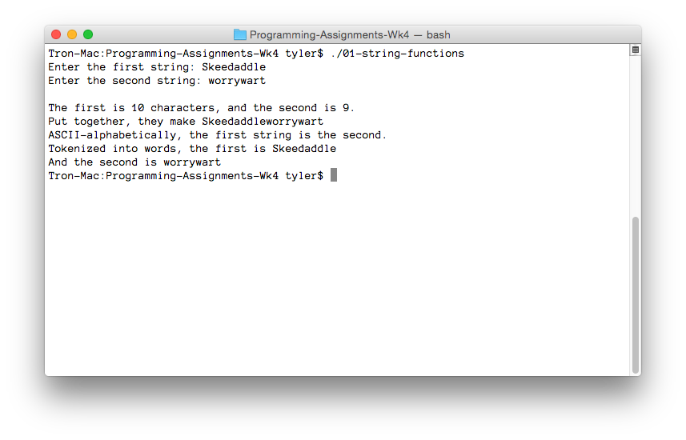

---

layout: default
title: 01-string-functions

---

{% highlight c++ %}
// Tyler Mumford, 2014
// Test strcat, strcmp, strlen, and strtok

#include <stdio.h>
#include <stdlib.h>
#include <string.h>

int main () {
	const int LIMIT = 160;
	const char *DELIMITERS = " \t\r\n";

	char *firstString;
	char *secondString;
	char *tokenPointer;
	char holdingString[LIMIT];

	printf("Enter the first string: ");
	fgets(holdingString, LIMIT, stdin);
	sscanf(holdingString, "%[^\n]", holdingString);
	// The sscanf removes the trailing newline. We could use gets, but it's deprecated.
	firstString = malloc(strlen(holdingString)+1);
	strcpy(firstString, holdingString);

	printf("Enter the second string: ");
	fgets(holdingString, LIMIT, stdin);
	sscanf(holdingString, "%[^\n]", holdingString);
	secondString = malloc(strlen(holdingString)+1);
	strcpy(secondString, holdingString);

	printf("\n");
	printf("The first is %i characters, and the second is %i.\n", strlen(firstString), strlen(secondString));
	printf("Put together, they make %s\n", (strcat(strcpy(holdingString, firstString), secondString)));
	printf("ASCII-alphabetically, the first string is ");
	switch (strcmp(firstString, secondString)) {
		case 0:
			printf("the same as "); break;
		case -1:
			printf("less than "); break;
		case 1:
			printf("greater than "); break;
	}
	printf("the second.\n");
	printf("Tokenized into words, the first is %s", tokenPointer = strtok(firstString, DELIMITERS));
	while ((tokenPointer = strtok(NULL, DELIMITERS)) != NULL) printf("|%s", tokenPointer);
	printf("\n");
	printf("And the second is %s", tokenPointer = strtok(secondString, DELIMITERS));
	while ((tokenPointer = strtok(NULL, DELIMITERS)) != NULL) printf("|%s", tokenPointer);
	printf("\n");

	free(firstString);
	free(secondString);
	return 0;
}
{% endhighlight %}


